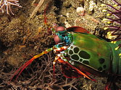

O camarão-louva-a-deus-palhaço (Odontodactylus scyllarus), também conhecido
como
lagosta-boxeadora é uma
espécie de tamarutaca nativa do Indo-Pacífico, de Guam até a África Oriental. Em aquários de água
salgada, é uma atração tanto pela coloração quanto pelo perigo.
Descrição

O Odontodactylus scyllarus é uma das espécies de estomatópodes (tamburutaca, ou
tamarutaca), chegando a 18 cm.De
coloração verde, com pernas laranjas e com a carapaça com estampas tipo leopardo.
Ecologia
Odontodactylus scyllarus vive em tocas que constrói nos fundos dos corais, ou através de
buracos deixados
por outros animais, em rochas e substratos próximos de corais de recifes a cerca de 40 metros de
profundidade.
São capazes de desferir um dos mais rápidos e violentos golpes do reino animal, seu soco fora registrado
com uma velocidade de 80 km/h e aceleração similar a uma arma calibre .22. A pressão exercida pelo soco
é de 60 kg/cm².Essa força esmagadora é a responsável pelo seu título de "lagosta-boxeadora" e é
capaz de facilmente quebrar a carapaça de um caranguejo, as conchas duras e calcificadas de gastrópodes
ou até mesmo quebrar o vidro reforçado de um aquário